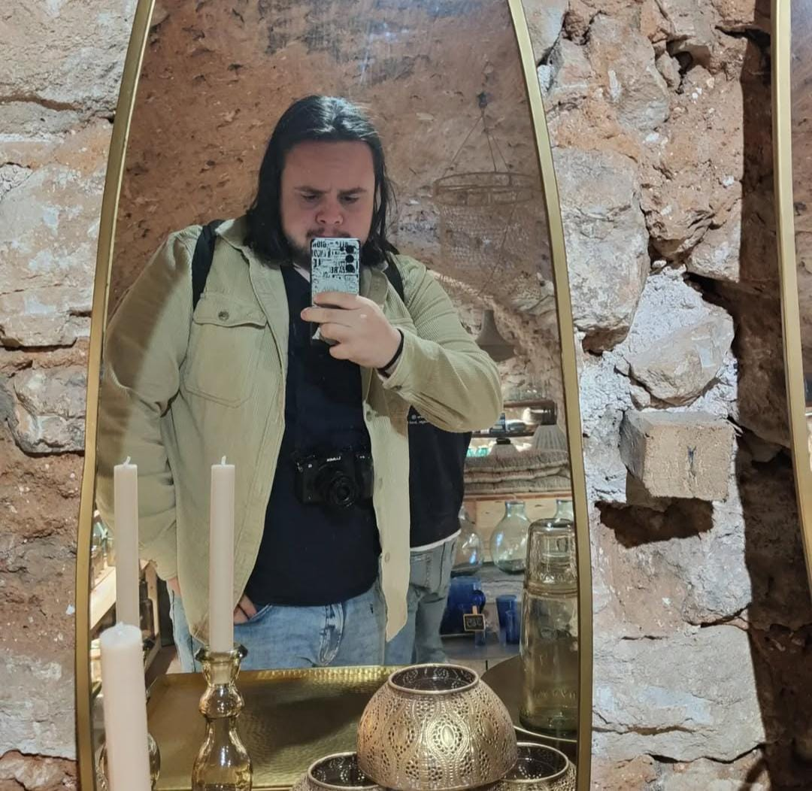

Hola, soy Jose Luis Gimenez
Diseñador grafico, web designer , apasionado/a por el arte y la creatividad. Desde mis primeros pasos en el mundo del diseño, he encontrado inspiración en el mundo de los videojuegos.
Mi trayectoria incluye proyectos de rebranding, motion graphics , concept art y marketing. Mi estilo combina el uso de colores saturados con un enfoque en la composicion.
Cuando no estoy trabajando en proyectos creativos, disfruto de viajar , salir con los amigos , o , simplemente jugar videojuegos. Siempre estoy buscando nuevas oportunidades para aprender, crecer y conectar con otros apasionados del diseño.